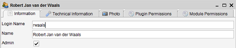
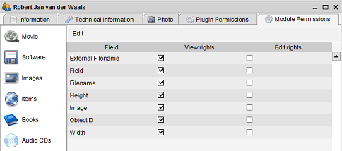

By default any user starting your installation of Data Crow will see all the information you
entered. Any user could even change or delete your items.
By creating users you determine which users are allowed access and what they are allowed to do.
Users can be created in the user module (this module is only available for administrators).
This module functions like any other module. You can search for, create, modify and remove users.
Default situation
By default one administrator user is present within in Data Crow. This user has the default login name of "sa".
No password has been set, which enables Data Crow to log in automatically. This is the default situation.
Creating a user
You can create a user by going to the user module and selecting "create new". The item form is opened
and you can start filling the information.

The most important information to enter is the "Login Name".
The login name is used by the user to log into Data Crow. Once saved the login name cannot be changed!
The "Admin" property (unchecked by default) is very important. If checked, the user becomes an administrator
and will have all rights within Data Crow. It is recommended to only have one administrator.
Administrators
Some operations are only allowed for administrators:
-
Removing / deleting items.
-
Changing the application settings.
-
User administration.
-
Creating templates.
Module permissions
In the Module Permission you can set the module and field access for the user. For each field you have the
option to allow viewing or editing.

By unchecking all rights the user will not be able to edit or
view the field and will be invisible to this user.
To deny access to the module you have to remove the rights from all of its fields.
Using the edit menu you can quickly set all field to read only ("Allow viewing of all fields")
or allow editing of all fields ("Allow editing of all fields"). To deny access to the module (by removing
all right from all fields) you can use the "Deny Module Access" menu option.
Plugin permissions
Some plugins are only available to the users after he has been authorized access to these plugins. In the
"Plugin Permissions" tab you can either grant or deny the user access by checking or unchecking the "Authorized"
field.
Changing the password
Menu path: User > Change Password
By default the password for each users has not been set. From the "user" menu you can change your password ("Change password").
First enter your old password (or leave empty if no password has been set) then enter your new password twice.